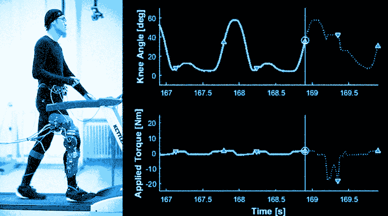
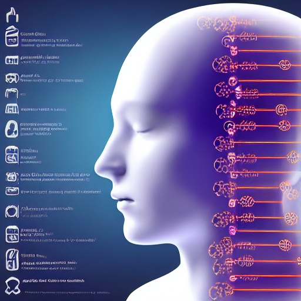

Introduction
Robotic prosthetics are advanced artificial limbs that use technology to enhance the lives of individuals with limb loss, functionality deprivation, or general daily assistance.
Advantages
Increased Functionality
.
Natural Movement

Sensory Feedback


Some robotic prosthetics can provide sensory feedback, allowing users to feel sensations through the prosthetic limb.
This is usually done with the help of a vast amount of sensors, e.g., Mechanomyogram (MMG) sensor.